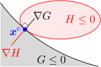

13.滑り・転がり

この章のシミュレーション（クリックで計算開始）：
運動方程式(
床の上に置かれた剛体の運動を計算したい。剛体には、摩擦なく滑る（＝滑り拘束）、あるいは、全く滑らずに転がる（＝転がり拘束）という拘束条件が課されているとする。前章では、剛体上の点を固定することを考えたが、その場合とはかなり違った運動になりそうである。
運動方程式を求めるための戦略としては、2種類が考えられる。1つ目は、前章のように自由な速度を求め、それに対する運動方程式を立てる方法。2つ目は、自由な剛体の運動方程式（第11章の11.1節）に、拘束力の総和
この章では、まず、剛体に拘束を追加した時の運動方程式を一般的に求める。その後、床と剛体が接しているための条件を考えることにより、滑り・転がり拘束の条件式を具体的に書下す。これらを、以下のように4つの節に分けて議論する。
拘 束 が 追 加 さ れ た 剛 体 の 運 動 方 程 式 剛 体 と 床 が 接 し て い る 条 件 滑 り 拘 束 転 が り 拘 束
13.1拘束が追加された剛体の運動方程式
計算を見やすくするため、式(
この節では、剛体に拘束条件を課した時の拘束力
ダランベールの原理(
剛体の自由な速度
式(
よって、運動方程式(
【13.1-注1】剛体の運動エネルギー
剛体の運動エネルギー
導出
剛体を構成する質点要素の速度
初期値に対する拘束条件
運動方程式(
初期速度
もし、拘束条件が、速度を含まない位置
非可積分な拘束条件の場合、初期値に対する拘束条件は、式(
【13.1-注3】非可積分な拘束条件
補足
[1]
以前の章で出てきた拘束条件は、最初から
13.2剛体と床が接しているための条件
この節では、剛体と床が接触し続けるために、剛体の速度
モデリング：時刻
床の形状を
時刻

剛体と床が接触しているための条件を考える。剛体と床の接触点を
剛体と床が接触し続ける時、上式は任意の時刻の
式(
ところで、剛体の位置・向きとその速度は
式(
次に、接触点の速度
13.3滑り拘束
拘束条件(
滑り拘束の拘束条件は、剛体と床が接触しているという前節の条件(
その変形を行うには、式(
拘束条件(
計算方法
以上をまとめると、滑り拘束の場合には以下のように計算すればよい：
- まず、床の形状
前述のように、今考えているのは、常に1点で接触している状況である。接触点が複数ある場合、あるいは運動の途中で増える場合（衝突運動になることが多いだろう）を扱うことはできない。逆に、接触点が減る場合も扱えない。例えば、本来であれば空中に飛び上がってしまうような場合でも、床から離れないようにする拘束力が働くため、床にくっついたままになる（拘束力の総和
計算例
例として、球を
数値計算を行うと下図のようになる。最も長い軸の半径が


13.4転がり拘束
拘束条件は式(
滑らないということは、接触点
なお、
剛体の初期位置・初期姿勢に対する拘束条件は、床と剛体が接していることのみなので、滑り拘束の場合と同じである。従って、初期位置に対する拘束条件よりも、初期速度に対する拘束条件(
計算例
床が静止している場合、数値計算を行うと下図のようになる。剛体の設定は、滑り拘束の場合と同じである。